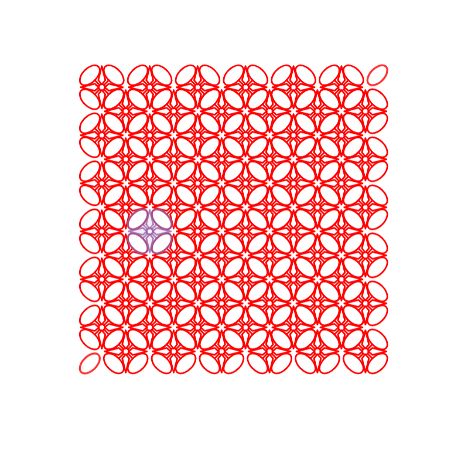
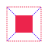
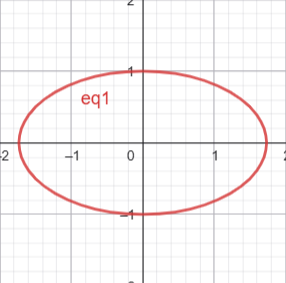
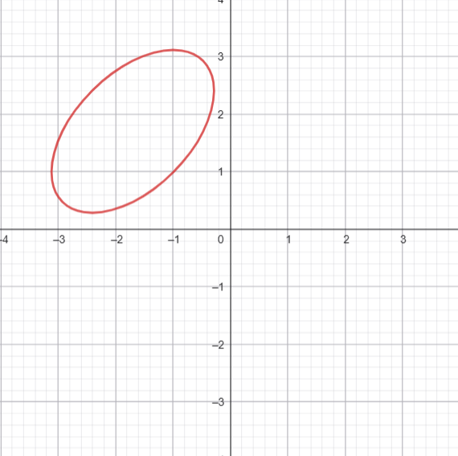
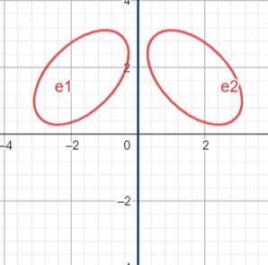
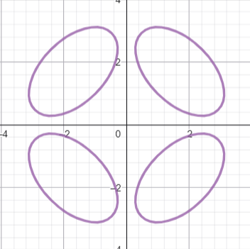
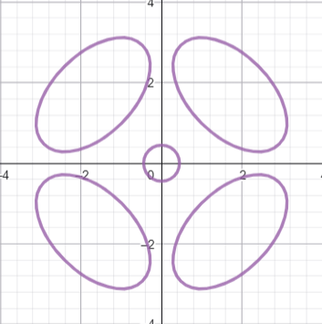
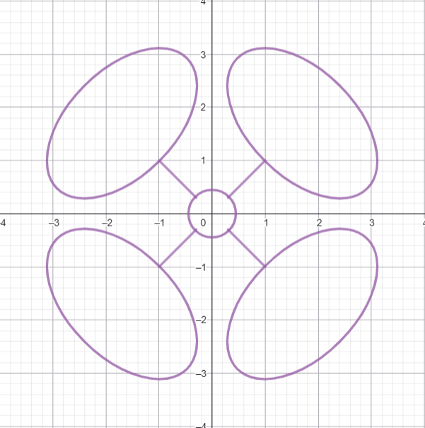
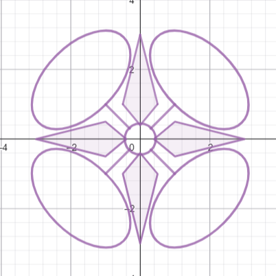
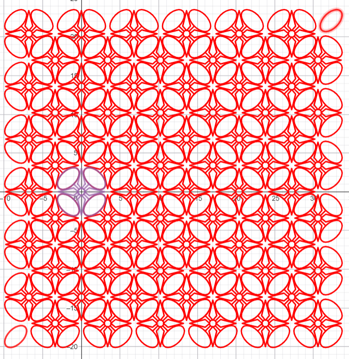

This is a math wajib project about geometric transformation topic, and utilises my knowledge in translation, rotation, reflection, and dilation.
Translation
Rotation
Reflection

Dilation
For this project, I made batik patterns on a math graphing system, in this case Geogebra. I made the batik pattern with math equations to create shapes such as ellipses and other polygon. and used geometric transformation to arrange them.
I think this project correlates with one of the seven habits of highly effective people.
Specifically, habit number 2; "Begin with the end in mind", as I need to clearly define and plan how the batik would turn out and how to achive that pattern ahead of time.
Process
Step 1
First, I made an ellipse using the ellipse equation : \(\frac{x^2}{a} + \frac{y^2}{b} = c\)
I used \(\frac{x^2}{3} + \frac{y^2}{1} = 1\) to make ->

Step 2
Next, I Rotated it \(45^\circ\) counterclockwise and Translated it to \(-1.7\) in the x axis and \(1.7\) in the y axis
the matrix equivalent to the rotation would be :
$$ \begin{pmatrix} cos(45) & -sin(45)\\ sin(45) & cos(45) \end{pmatrix} = \begin{pmatrix} \frac{\sqrt{2}}{2} & -\frac{\sqrt{2}}{2} \\ \frac{\sqrt{2}}{2} & \frac{\sqrt{2}}{2} \end{pmatrix} $$and the matrix equivalent to the translation would be :
$$ \begin{pmatrix} -1.7 \\ 1.7 \end{pmatrix} $$
Step 3
Let's call that object e1 (ellipse 1). I made anoter object that is the reflection of p1 according to the line : \(x = 0\) , which would be a straight vertical line going through the y axis.
I called this object e2 and now, our project looks like this :
With a few more rotation and/or reflection, we will have four ellipses as such :


Step 4
I then made a circle using the equation : \(x^2 + y^2 = 1\).
I think it's too big though, so I dilated it with a dilation factor of \(\sqrt{0.2}\)

step 5
After that, I made a line segment from point \((0.3, 0.3)\) to point \((1, 1)\).
I made 3 other objects from rotation, then i got this :

Step 6
To finish off the main shape, I added this quadrilaterals in the shape of diamonds.

step 7
Finally, I duplicated and translated the object multiple times until it looks like batik.
